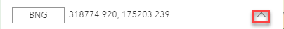
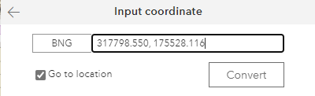
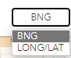
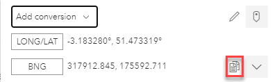

The default for this tool is Live mode so, if you move the mouse over the map the displayed coordinates will change.

Clicking on the up arrow, outlined in red in the above image, displays more functionality e.g.

The pencil icon (outlined in red above) allows you to input comma separated X and Y coordinates and then tick the Go to location box and click Convert to zoom to the location.

The default is to display the coordinates in BNG (British National Grid) but you may also display the Long/Lat by clicking on BNG e.g.

Selecting LONG/LAT displays the coordinates as LONG/LAT entry. You may use the Copy tool (outlined in red below) to copy either of the entries just hover over the entry you wish to copy and the icon is displayed.

If you click on the  tool the map coordinates switch from Live to Capture mode, this lets you click on the map to capture the coordinates at the point you click your mouse and then you can use the Copy tool (outlined in red in the image above) to copy the current coordinates.
tool the map coordinates switch from Live to Capture mode, this lets you click on the map to capture the coordinates at the point you click your mouse and then you can use the Copy tool (outlined in red in the image above) to copy the current coordinates.